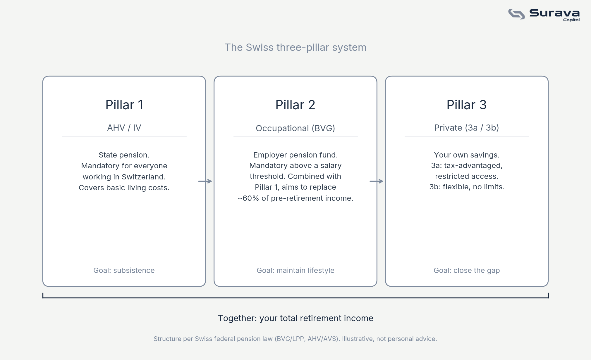

Why three systems instead of one
Most countries fund retirement through a single state pension, or leave it almost entirely to private savings. Switzerland does neither. It splits the job across three distinct systems, called pillars, each with a different purpose and a different level of risk. The idea is that no single pillar has to do all the work, and no single failure can wipe out your retirement.

Pillar 1: AHV, the safety net for everyone
AHV (Alters- und Hinterlassenenversicherung), known as AVS in French, is the state pension. It is mandatory for anyone working in Switzerland, funded through payroll contributions split between employee and employer, and it works on a pay-as-you-go basis: today's workers fund today's retirees, not their own future selves.
Pillar 1 is designed to cover basic subsistence, not your lifestyle. The payout is capped and depends on your contribution years and average income, but it is intentionally modest. Its job is to make sure nobody in Switzerland retires with literally nothing, not to replace your salary.
Pillar 2: the occupational pension that does the heavy lifting
Pillar 2, the BVG (Berufliche Vorsorge) or LPP in French, is the occupational pension fund tied to your employer. Once your salary crosses a legal threshold, both you and your employer are required to contribute a percentage of it into a pension fund, which invests that money over your working life.
This is where most of the real saving happens. Combined, Pillar 1 and Pillar 2 are designed to replace around 60 percent of your pre-retirement income, which is the benchmark Swiss pension policy is built around. If you change jobs, your Pillar 2 balance moves with you into a vested benefits account or your new employer's fund, it does not disappear.
Pillar 3: what you build yourself
Pillar 3 is where your own decisions matter most, and it splits into two parts.
Pillar 3a is tax-advantaged private retirement savings. Contributions are deductible from your taxable income up to an annual limit set by the federal government, which makes it one of the most efficient ways to reduce your tax bill in Switzerland. In exchange for that tax benefit, the money is restricted: you generally cannot withdraw it before retirement, except for specific cases like buying a primary home or emigrating permanently.
Pillar 3b is ordinary private savings and investing, with no special tax treatment but no restrictions either. It is simply money you choose to set aside and invest for the future, alongside or instead of 3a.
Why the gap between Pillars 1 and 2 and your actual goals matters
Sixty percent income replacement is a reasonable floor, but it is rarely the number people actually want in retirement, especially if you plan to retire early, travel more, or simply maintain your current lifestyle without a pay cut. That gap between what Pillars 1 and 2 provide and what you actually want is exactly what Pillar 3 exists to close.
This is also why starting Pillar 3a contributions early matters more than the tax deduction alone suggests. The money is invested over decades, and starting ten years earlier does far more for the final balance than contributing more per year later on.
This article is for general educational and informational purposes only. It is not investment, tax, or legal advice, or an offer of any regulated financial service. Contribution limits, thresholds, and rules for AHV, BVG, and Pillar 3a change periodically; always check current figures with an official source (such as ahv-iv.ch) or a qualified professional before making decisions. Views expressed are those of Surava Capital.